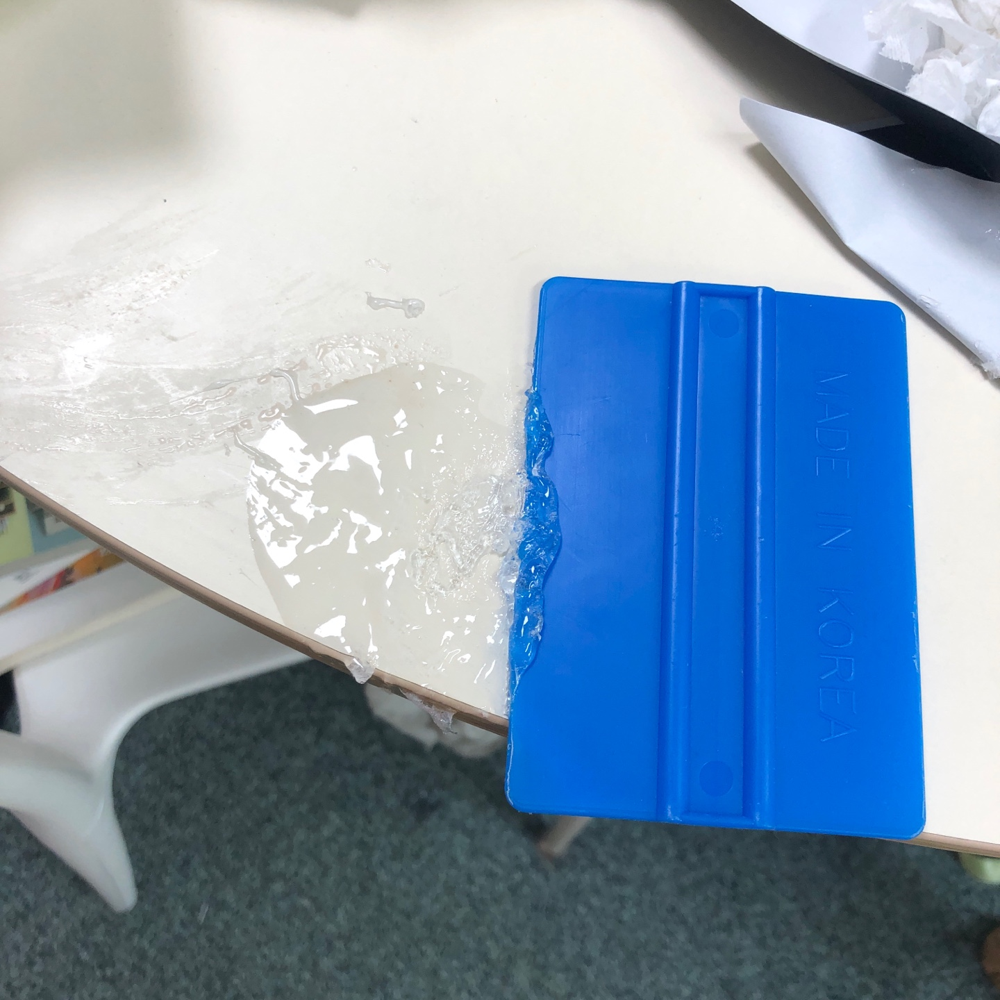
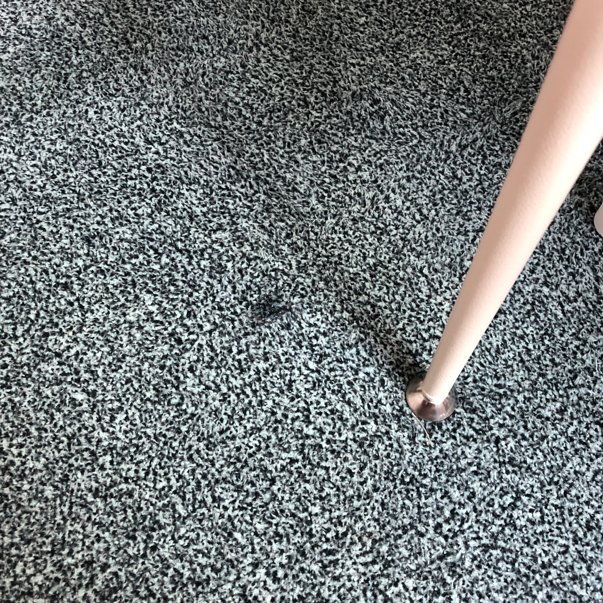
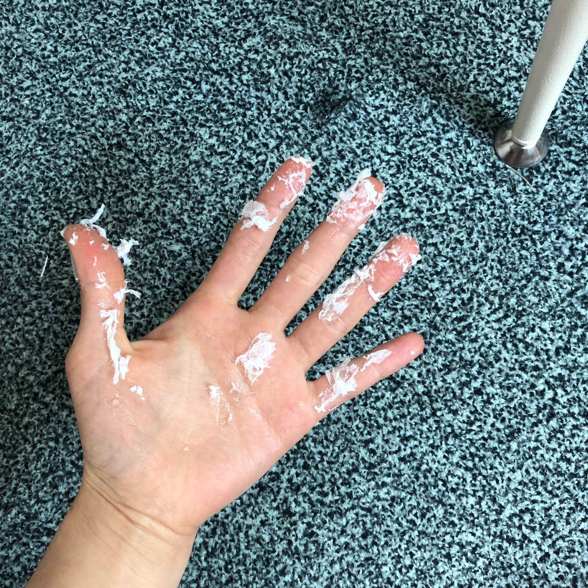

오늘 레진 작업을 하다가 두 번이나 실수를 했어요..
(그래서 사실 이 곳은 한탄 페이지가 될 것 같기도 해요,
저는 멍청비용을 꽤 많이 쓰거든요💩)
첫번째 실수.
는 사이즈가 큰 구 몰드에 레진을 반이상 부으니까 고정이 안 돼서
자기 혼자 굴러버리더라구요..(안돼..🙉🙉)
작업대 위로 크게 퍼질러져서 레진도 모두 버리고 화도 매우 났답니다 ㅠㅠㅠ
이 때는 사진조차 찍지 않았어요 정말 😡😡😡
저는 실수를 하면 자책을 하는 편이라
세상이 무너질 것처럼 자책을 하면서 다시 만들었죠 ㅠㅠ
두 번째는 절대 흔들리지 않게 고정을 시켜야겠다.고정고정 생각하면서
얼추 잘 만들어놓고 카페트에 앉아 포장 연습에 몰두하고 있었죠.
문득 고개를 들었는데 카페트로 레진이 흐르다가
고드름처럼 공중에서 굳어있더라구요.
상황을 보니 레진이 뜨거워지면서 몰드 사이로 넘쳤더라구요 ㅎㅎㅎㅎ
여기서부터는 살짝 멘탈 나가서 그냥 신기하다 하고 2초간 바라봤던 거 같아요. 만져도보고..😦
여튼 정신차리고 헤라로 미는데
레진이 잘 굳혀지고 있었는지 잘 안 떨어지더라구요.

그래도 완전히 굳은 게 아니라 아세톤으로 문질러 모두 지우긴 했답니다.
이 원형테이블..처음 살 땐 매거진에 나올 것 같은 그런 테이블이었는데
제가 너무 막 쓰긴해요..
심지어 작업할 때 쓰려고 실리콘매트도 사놨었는데..왜..안 쓰고..너..정말..
문제는 카페트...
털을 자르지 않는 이상 레진이 닦이지 않을 것 가타여..ㅎ..😇...ㅎ😇ㅎ

힘겹게 혼자만의 싸움을 끝내고나니 손 상태가 제일 심각했어요ㅎㅎㅎ;

그래도 손은 유기생물체니까 재생하겠죠....?🙄
<끝>
내일 작품이 나오면 완성샷까지 찍어볼게요..!
<진짜끝>